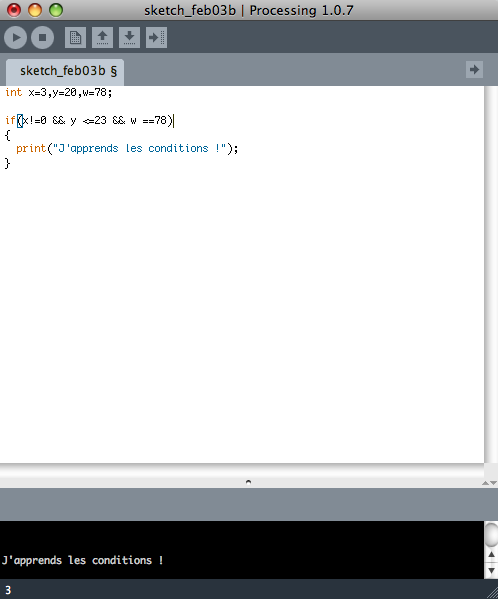

Bienvenue sur ce tutoriel consacré à Processing. C'est un langage de programmation basé sur la plate-forme Java, et qui dispose de plus d'une centaine de librairies ! Ce tutoriel sera structuré de la manière suivante :
Si vous êtes ici, c'est que vous êtes prêts à en découdre avec la programmation :pirate: ! Mais non, ne vous inquiétez pas, Processing n'est pas plus compliqué que les autres langages, voir un peu moins.
Dans ce tutoriel, je vais vous appendre à programmer sous Processing. Vous êtes prêts ? Allez, on s'y met ;)
Processing est un langage et un environnement de programmation open-source (c'est aussi le nom du compilateur). Il est employé par des étudiants, des artistes, des créateurs, des chercheurs, et des amateurs. Ce language basique offre de très nombreuses possibilités, et laisse libre cours à votre imagination, notamment grâce à sa centaine de librairies disponibles. Le logiciel fonctionne sur Macintosh, sous Windows et sous Linux, en effet il est basé sur la plate-forme Java. Processing offre la possibilité de faire de la 3D, des jeux en réseau, des effets de son et lumière mais aussi bien d'autres possibilités.
Processing, ce que l'on peut faire
Je fais une petite selection de très bons scripts touvés sur le site openprocessing.org. Si les scripts ne se lancent pas, cliquez sur le lien de téléchargement, au-dessus du code source. Ensuite, décompressez le fichier, puis ouvrir le dossier décompressé. Dans ce dossier, cliquez sur le fichier avec l'extension .html, ou bien si il n'existe pas sur le fichier avec l'extension .jar Et voilà, le script téléchargé se lance, et admirez, ou bien jouez :)
Le premier est assez marrant. Je tiens à préciser que ce n'est pas moi :lol: Par ici
Et le dernier, un petit mélange de 3D et de création artistique : Vous dessinez ce que vous voulez, et en maintenant la touche "espace" enfoncée, votre dessin tourne et crée une forme en 3 dimensions. Par ici
Bien sûr, ici je ne vous ai sélectionné que quelque créations, et d'ailleurs un peu au hasard, tellement il y en avait :-°. J'espère cependant que vous vous êtes fait une idée de l'étendue des possibilités de Processing :magicien: .
Le téléchargement
Bon, c'est bien tout ça, mais sans logiciel, comment on fait ? o_O . Processing est disponible sous Macintosh, Linux et Windows, ce qui est un avantage. Pour télécharger processing, rien de plus simple, il suffit de se rendre sur le site : ici. Je vous fait confiance pour le téléchargement, vous y arriverez ;) (il suffit de cliquer le sur le bon OS).
Nous venons d'installer Processing, on peut donc lancer l'application. Si tout s'est bien déroulé lors du téléchargement, lorsque vous lancez l'application, vous devez voir apparaître ceci sous Macintosh :
et sous Windows :
Excusez moi, je n'ai pas d'images de Processing sous Linux
Donc voilà, l'interface du logiciel est assez simple, la voici :
Elle se compose donc d'une barre d'outils, d'une entrée de texte, où l'on codera, et une sortie de texte, où l'on pourra afficher du texte, et où les erreurs apparaîtront.
La barre d'outils que voici
est composée de 6 boutons :
Run : qui permet de lancer le programme, de l'exécuter
Stop : qui permet d'arrêter l'exécution du programme, de fermer la fenêtre du programme
New : qui permet de créer une nouvelle fenêtre vierge
Open : qui permet d'ouvrir un programme existant, enregistré, ou bien les exemples de créations Processing préenregistrées
Save : qui permet de sauvegarder votre fichier
Le dernier n'est pas très important
Dans ce tutoriel, nous utiliseront essentiellement l'entrée de texte, là où l'on écrira le code. Ce premier chapitre est fini, vous pouvez vous familiariser avec logiciel. Il est possible de créer un nouveau fichier en cliquant sur "file"/"new", ou sur l'icône
, et le sauvegarder.
Nous avons désormais le logiciel, on peut passer à la pratique. Rendez-vous au chapitre suivant ;)
Désormais, nous avons toutes les clés en main pour commencer à programmer : le logiciel, et nous avons eu un aperçu de son interface. Dans ce chapitre, nous allons apprendre ce qu'est une variable et comment s'en servir.
Une variable est un élément qui permet de stocker une donnée. Cette donnée peut-être un nombre entier, un décimal, un caractère, une chaîne de caractères, un tableau de valeur, une matrice...
La variable est un élément très important d'un code, c'en est même un peu la base. Je vais vous présenter le type de variable le plus courant ; la variable de type entier :
Syntaxe :
int nom_de_la_variable;
//ensuite on met le code
Comme vous le pouvez voir, la syntaxe est assez simple.
Exemples :
int a;
//ou encore
int b,c,d; // il est possible de déclarer plusieurs variables comme ceci, à la suite
int f=1; // on donne comme valeur 1 à f
size(400,400);
//fenetre de 400 pixels sur 400 pixels
Rendu :
Ecrire du texte
Je suis sûr que vous attendiez ce moment depuis longtemps, nous allons apprendre à écrire du texte ! :D
La fonction print() va nous permettre de le faire. Print() permet d'écrire, sur la sortie standard (plus simplement d'afficher du texte), l'argument qui lui est passé en paramètres. Comme je vous ai montré dans la présentation du logiciel, le texte s'affichera sur la sortie de texte. En l'occurrence, le passage de paramètre se fait ici entre les parenthèses.
Syntaxe :
print(argument);
Exemple :
print("Hello World !");
Rendu :
String a = "Hello World !";
print(a);
le rendu est le même, mais la façon d'écrire le texte n'est pas la même.
La fonction println() est similaire d'utilisation, mais permet un retour à la ligne, à chaque nouvel affichage.
Concaténation
Concaténation ? La concaténation désigne l'action de mettre bout à bout au moins deux chaînes. Sachez que avec print, vous pouvez, en utilisant une seule fois cette fonction écrire plusieurs choses exemple :
String a = "tutoriel est", b = " Processing.";
println("Ce " + a + " consacré à" + b);
Connaître la longueur d'un texte
Il existe une fonction permettant de déterminer la longueur d'une chaîne de caractères. Cette fonction est length(). Seulement, son fonctionnement est un peu plus complexe que les fonctions que nous avons vu jusqu'à présent.
Exemple :
//Tout d'abord, initialisons une chaîne de caractères texte
String texte;
String texte;
void setup()
{
//ensuite, on écrit notre texte
texte = "J'essaie de trouver le nombre de caractères de cette chaîne.";
int nb_caracteres = texte.length();//texte.lenght signifie que l'on veut la longueur de la chaîne texte
print("Nb de carcatères : " + nb_caracteres);//et il ne reste plus qu'à afficher
}
Et voilà :
Mettre du texte en majuscules/minuscules
Pour mettre du texte en majuscules ou en minuscules, toUpperCase() et toLowerCase() sont là pour ça. Je vais vous donner un exemple :
void setup()
{
//ensuite, on écrit notre texte
String texte = "J'Essaie De Mettre En Majuscules Et Minuscules Ce Texte.";//on crée notre chaîne de caractères
String texte2 = texte.toUpperCase();//on met texte en majuscule, et on le stocke dans texte2
String texte3 = texte2.toLowerCase();//on met texte en minuscule, et on le stocke dans texte3
println(texte2);//on affiche texte2, et on fait un retour à la ligne avec println()
print(texte3);//on affiche texte3
}
Avec les trois fonctions que je vais vous présenter, vous pourrez donner une couleur à une ligne, au background, à une forme...
Background()
Tout d'abord, la fonction background() : comme vous l'avez peut-être deviné, cette fonction va nous permettre de donner une couleur à notre fenêtre, à l'arrière-plan.
Nous avons vu un certain nombre de fonction dans le précédent chapitre. Et bien nous allons en voir encore dans cette partie :lol: Allez, ne vous découragez pas, c'est pas bien dur ;)
Un tableau est ce que l'on peut aussi appeler une liste. Le tableau est un élément de programmation assez abstrait ! C'est un ensemble de variables dans lequel on stocke plusieurs informations. Ces informations sont classées par cases, d'où a notion de tableau.
Voilà la syntaxe. Mais bien sûr, vous pouvez mettre autant d'éléments que vous voulez dans le tableau.
C'est bien beau, mais quand je lance le programme, rien ne se passe, il y a juste une petite fenêtre grise qui s'ouvre ! :o
Ne vous inquiétez pas ;) Pour ce qui est de la petite fenêtre grise, c'est absolument normal. En effet, tout programme que vous lancerez ouvrira une fenêtre, et par défaut elle sera grise et de petite taille. (je n'ai pas la taille :-° )
Maintenant, nous allons voir comment appeler un élément du tableau.
Appeler un élément du tableau
Et bien c'est très simple :
Syntaxe :
print (nom_du_tableau[]);
Entre les crochets, il faut renseigner le numéro, ou la position, si vous préférez, de l'élément dans la tableau. Prenons un exemple :
La fonction line() permet de tracer un trait entre deux points, donc tout simplement une trait.
Syntaxe :
line(X1,Y1,X2,Y2);
//X1 étant l'abscisse du premier point (l'extrémité de la ligne)
//Y1 étant l'ordonnée du premier point
//X2 étant l'abscisse du second point
//Y2 étant l'ordonnée du second point
Exemple :
size(200,200);
line(50,50,150,150);
Rendu :
Rect()
La fonction Rect() permet de dessiner un rectangle.
Syntaxe :
rect(X,Y,largeur,hauteur);
//X étant l'abcisse du coin supérieur gauche du rectangle
//Y étant l'ordonnée du centre du rectangle
Exemple :
size(200,200);
rect(50,50,100,100);
Rendu :
Ellipse()
La fonction Ellipse() permet de dessiner une ellipse, et un cercle.
Syntaxe :
ellipse(X,Y,largeur,hauteur);
//X étant l'abscisse du centre de l'ellipse
//Y étant l'ordonnée du centre de l'ellipse
Exemple :
size(200,200);
ellipse(100,100,150,150);
Rendu :
Quad()
La fonction quad(), comme son nom l'indique permet la réalisation d'un quadrilatère. Pour se faire, il faut passe en paramètres les positions sur l'axe des abscisses et des ordonnées des sommets du quadrilatère. Le schéma suivant vous vous indique l'ordre des points que l'on passe en paramètres. Ainsi, si vous voulez tracer un carré, vous ne vous retrouverez pas avec un quadrilatère croisé :p
Syntaxe :
quad(x1, y1, x2, y2, x3, y3, x4, y4);
Exemple :
size(100,100);
quad(10,21,95,37,79,92,37,83);
Rendu :
Point()
La fonction point() permet de faire un point, tout simplement :p
Syntaxe :
point(x,y);
Exemple :
point(50,50);
Rendu :
RectMode()
La fonction rectMode() permet de régler rect(). En effet, comme je vous l'ai montré plus haut, X et Y sont respectivement l'abscisse et l'ordonnée du coin gauche. Lorsque vous faites un rectangle, vous déclarez en premier x et y, puis la largeur et la hauteur. Par défaut, x et y sont le coin supérieur gauche du rectangle. Si vous utilisez CORNER, x et y seront le centre du rectangle.
La fonction ellipseMode() fonctionne sur le même principe que rectMode(). Cependant, c'en est l'inverse. Par défaut, x et y sont le centre de l'ellipse. En utilisant CORNER, x et y sont définis comme le coin supérieur gauche.
Syntaxe :
ellipseMode(CORNER);
Smooth()
Je ne sais pas si vous avez remarqué, mais lorsque vous faites un cercle, le trait n'est pas net, c'est dû à la pixélisation. Pour y remédier, smooth() est là :pirate: :p
Vous venez d'apprendre un certain nombre de choses, il est donc important de les mettre en pratique pour que vous vous en souveniez correctement. :) Je vais donc vous proposer un petit exercice. :o Bien sûr, cet exercice ne vous servira strictement à rien, mais vous permettra de mettre en pratique vos connaissances acquises jusque là.
Exercice 1:
Ecrire un programme pour dessiner un rectangle rouge à l'intérieur, des traits bleu, de 100 pixels de hauteur sur 50 de largeur, dans une fenêtre de 300 pixels sur 300 pixels. Le fond sera vert. A vos crayons, ou plutôt devrais-je dire à vos claviers :D
Si vous ne trouvez pas du premier coup, n'hésitez pas à relire le cours, et à faire un petit schéma.
background(0,255,0);
size(300,300);
fill(255,0,0);
stroke(0,0,255);
rect(100,100,50,100);
//dans votre "RGB", vous pouvez très bien varier les valeurs.
Rendu :
Et voilà, c'en est fini des fonctions ! :zorro: Rendez-vous dans le prochain chapitre où nous allons parler des sous-fonctions.
Dans ce quatrième chapitre, nous allons apprendre à réaliser une sous-fonction. Pour cela, on va passer à un niveau de difficulté légèrement supérieur. Les sous-fonctions ressemblent aux fonctions utilisateurs dans les autres langages, des fonction qu'on peut créer nous-même. Void setup() et void draw() sont des fonctions pré-implémentées et prêtes à l'emploi. L'intérêt premier, est d'éviter les répétitions inutiles (de factoriser le code), et d'éviter de réinventer la roue à chaque programme que l'on fait.
Une sous-fonction est réalisée à partir des fonctions principales de processing (celles que je vous ai appris dans le chapitre précédent). Elle permet de réaliser des fonctions plus avancées, de les créer.
Syntaxe :
void nom_de_la_fonction()
{
instruction 1;
instruction 2;
...
}
//void sert à déclarer la sous-fonction
//une instruction peut-être par exemple un line()
Exemple :
Je veux réaliser une sous-fonction qui dessine une croix :
Comme je vous l'ai dit, l'exemple du void cross() ne marche pas tout seul.
Premièrement, il faut ajouter un void setup()... :o Dans ce void, nous déclarerons toutes les fonctions qui seront valables tout au long de votre programme. En effet, si c'est une application, certaines fonctions varient... Les fonctions que nous y mettons sont en général background() et size(). Vous pouvez bien sûr y mettre un tas d'autres fonctions. ;)
Voilà notre dernier void : void draw(). Dans ce void draw(), nous allons appeler la sous-fonction croix() avec la méthode void, mais nous pourrions très bien appeler tout autre sous-fonction.
Syntaxe :
void draw()
{
instruction 1;
instruction 2;
...
}
Maintenant, on va pouvoir écrire en entier le code :
Donc pour récapituler, pour créer une sous-fonctions, il est nécessaire d'utiliser 3 void :
void setup() où l'on déclare les fonctions principales telles que la taille de la fenêtre, le fond d'écran...
void draw() où l'on appelle les sous fonctions de notre choix, tel que void croix;
et dernièrement, notre sous-fonction, ici void croix.
Le code suivant est la syntaxe globale d'une sous-fonction :
void setup()
{
int TF=100;
size(TF,TF);
//ici nous utilisons TF : taille de la fenêtre, cela permet d'utiliser cette valeur dans certains cas comme une sous-fonction
// avec en passage de paramètre la taille de la fenêtre
}
void draw()
{
déclaration des variables
fonction();
//ex : bouton(int a, float b);
}
void sous-fonction()
{
//si vous mettez de variables dans le code de votre fonction, mettez les entre parenthèses
instruction 1;
instruction 2;
déclaration;
}
Vous pouvez même créer des sous-sous fonction, en les appelant dans votre sous-fonction, comme on l'a fait dans le void draw()
Tout comme le précédent exercice, il a pour but de vous embêter un peu, histoire que vous ressortiez toutes les fonctions que vous avez appris.
Exercice 1 :
Ecrire la sous-fonction qui permet de réaliser une croix verte dans un rectangle bleu, aux contours rouges, dans une fenêtre orange (faites un mélange de couleurs) de 200 pixels sur 200. Le rectangle sera de 100 pixels de largeur sur 50 de hauteur, et son coin supérieur gauche en (40;60).
Ecrire la sous-fonction qui réalise un carré avec en passage de paramètre la largeur et la taille de la fenêtre. Le carré doit être centré au milieu de la fenêtre.
Faites attention aux priorités mathématiques. Pas facile, hein ?
Aide :
Code :
int TF=200, l=120;//on déclare TF : la taille la fenêtre, et l : la largeur du carré
void setup()
{
size(TF,TF);
}
void draw()
{
carre();//on déclare la fonction
}
void carre()
{
//voici la façon théorique pour réaliser un carré, bien sûr il est possible d'utiliser rect()
//mais dans certains cas, cette fonction nous sera utile
line((TF+l)/2,(TF+l)/2,(TF+l)/2,(TF-l)/2);
line((TF+l)/2,(TF-l)/2,(TF-l)/2,(TF-l)/2);
line((TF-l)/2,(TF-l)/2,(TF-l)/2,(TF+l)/2);
line((TF-l)/2,(TF+l)/2,(TF+l)/2,(TF+l)/2);
}
Rendu :
Je pense qu'il est nécessaire que vous relisiez ce chapitre, ou bien que vous vous y entraîniez. Si vous avez compris ce chapitre, vous pouvez dès à présent réaliser des programmes intéressants, presque complexes :-° :lol: Dans le prochain chapitre, nous approfondiront avec le hasard, les conditions, les boucles, les conditions et l'incrémentation...
Dans seconde partie, nous allons étudier plus en profondeur Processing, nous y verrons notamment les boucles, le hasard, l'incrémentation, les conditions... :)
Dans ce premier chapitre, nous allons voir les boucles, chose très utile ! :o
L'incrémentation est un processus particulier que l'on utilise assez souvent dans les boucles. Il consiste à augmenter la valeur d'une variable. Il est aussi possible d'utiliser la décrémentation, qui est le processus inverse, qui consiste à baisser la valeur d'une variable.
Exemple :
//incrémentation :
int a=0;
a=a+1;
println(a);
//décrémentation :
int a=0;
a=a-1;
println(a);
Vous allez alors voir s'afficher dans la sortie de texte le nombre 1.
Rendu :
Cependant, il existe d'autres incrémentations et décrémentations possibles :
//incrémentation :
a++;
a+=1;//on met un + a cote du a, avant le signe =, pour montrer que l'on va additionner, plus on indique de combien
a=a*2;
a*=2;
//le principe est le même pour la multiplication que pour l'addition
//décrémentation :
a--;
a-=1;//on met un + a cote du a, avant le signe =, pour montrer que l'on va additionner, plus on indique de combien
a=a-2;
a-=2;
//le principe est le même pour la division que pour la soustraction
Explication : Tant que la condition est respectée, le programme exécute les instructions contenues dans la boucle. Dans la série d'instructions, on retrouve généralement une variable qui s'incrémente.
Exemple :
int a = 0;
while ( a < 10 )
{
println(a);
a++;
}
Les boucles itératives
Syntaxe :
for ( condition de départ ; condition de fin ; itération)
{
instruction 1;
instruction 2;
...
}
Explication : Peut se traduire par : de la condition de départ, jusqu'à la condition de fin, j'effectue les instructions contenues dans la boucle et l'itération. L'itération correspond à l'incrémentation ou la décrémentation d'une variable.
Exemples :
Vous avez sans doute remarqué, que dans l'exemple de gauche, le rond laisse une trace derrière lui... :colere2: Nous allons voir comment l'effacer dans la partie suivante. :)
Nous allons voir comment structurer un programme, une animation.
Comme je vous l'ai montré dans la partie précédente, l'ellipse laisse une grosse trace toute moche derrière elle :colere2: >_ . J'ai la solution, et je vais vous la donner :magicien: :D Avant cela, je vais vous montrer la structure de notre programme :
Voilà notre code de base d'une animation. La fonction if est une condition, chose que nous aborderons plus tard. Mais vous l'avez sûrement deviné, dans ce cas, c'est si x atteint 395, et bien x reçoit une nouvelle nouvelle valeur qui ici est 5. Dans le void draw, nous appelons deux sous-fonctions : nettoyer() et dessiner(). Nettoyer() va nous permettre d'effacer par exemple la trace de l'ellipse. Je vous explique : en fait lorsque le programme s'exécute, c'est comme un film, c'est des image qui se superposent. Et bien, ici, à chaque nouvelle image, on dit que le fond d'écran doit rester blanc, ducoup ça nous enlève la trace. C'est dans dessiner que l'on mettra par exemple notre ellipse pour la faire bouger.
Essayons :
Et normalement, vous devez voir défiler votre cercle comme ceci (mais ici c'est un mauvais gif :p) : Excusez moi, pour la mauvaise qualité du gif (il faut cliquer sur la miniature pour le voir) :-°. Et voilà, vous venez de réaliser votre première animation. Là, j'ai choisi un exemple simple, mais avec ce qui suit : les conditions, le hasard et le déplacement, on va pouvoir faire un pong par exemple !
On peut faire le test (appliquer la condition) sur plusieurs, en les imbriquant. C'est à dire que l'on peut préciser plusieurs conditions à la fois.
La syntaxe que je vous ai montré est celle de base, maintenant je vais vous montrer ce qu'il faut mettre entre parenthèse dans la condition :
//condition égal à
if(variable_a==valeur)
{}
//condition supérieur à
if(variable_a>valeur)
{}
//condition supérieur ou égal à
if(variable_a>=valeur)
{}
//condition inférieur à
if(variable_a<valeur)
{}
//condition inférieur ou égal à
if(variable_a<=valeur)
{}
//condition n'est pas égal à
if(variable_a!=valeur)
{}
//condition 1 ou condition 2
if(condition 1 || condition 2)
{}
//condition 1 et condition 2
if(condition 1 && condition 2)
{}
Il ne faut pas oublier que "valeur" peut-être un nombre, mais aussi une variable ! Je vais vous donner quelques exemples afin que vous vous familiarisiez avec les conditions. Exemples :
if(x>10 && x<15)
{
y=45;
}
if(x!=0 && y <=23 && w ==78)
{
print("J'apprends les conditions !");
}
Rendu :

Vous pouvez imbriquer autant de conditions que vous le souhaitez, mais faîtes attention à ne pas trop en mettre, afin de ne pas vous emmêler les pinceaux :p
Loop() est une fonction qui permet l'exécution d'une animation. En réalité, on n'en a pas besoin directement. Son "inverse" noLoop() est lui plus utile. Dans une animation, prenons l'exemple du pong que nous ferons en TP, si la balle touche le mur, et bien vous perdez. Vous pouvez donc utiliser la fonction noLoop().
Syntaxe :
noLoop;
//la fonction s'utilise très simplement, mais est généralement placée dans une condition
Prenons l'exemple du pong :
//soit x l'abcisse de l'ellipse qui fait office de balle
if(x=0)
{
noLoop();
//les lignes de code suivantes ne sont pas obligatoires
else
{
loop();
}
Assurez vous d'avoir bien compris ce chapitre, il est relativement important. ;) Prochain chapitre, les conditions. :pirate:
Donc voilà, on va apprendre à utiliser la souris dans un code. Par exemple, imaginons que je souhaite qu'une ellipse se déplace pareil que ma souris sur l'ecran. Et bien c'est assez simple, voilà comment on fait :
int x;
int y;
void draw()
{
ellipse(x,y,10,10);
x=mouseX;
y=mouseY;
}
Essayez, et après avoir beaucoup bougé la souris, vous devez obtenir quelque chose de ce genre :D :
Mais comme vous voyez, on retrouve notre trace... Il ne faut donc pas oublier notre void nettoyer(), enfin si vous ne voulez pas voir de cercles bien sûr. Dans certains cas, si vous voulez faire la même chose, mais avec point(), vous pouvez ne pas utiliser de void nettoyer(), afin de pouvoir dessiner avec :)
Donc avec le void nettoyer(), ça donne ça :
MousePressed
La fonction mousePressed est simple d'utilisation : si elle est vérifiée (on clique), elle fait ce que vous avez mis entre accolades, sinon, ce que vous avez mis dans else, ou rien si vous n'avez pas mit de else. La syntaxe que je vais vous donner est disons la plus courante, la plus utile :
Syntaxe :
if (mousePressed == true ou false)
{
}
else
{
}
True et false servent à dire si la fonction est vérifiée ou non, dans ce cas, si on clique ou pas. Prenons un exemple où si l'on clique (restez appuyés un peu), un rectangle change de couleur, mais vous pouvez faire ce que vous voulez, il peut changer de taille, vous pouvez changer le fond d'écran, faire apparaître quelque chose, écrire sur la sortie texte, exécuter une action...
La fonction mousePressed() s'utilise exactement de la même façon que mousePressed. Il y a seulement une différence : reprenons notre ellipse qui change de couleur lorsqu'on clique, et bien avec mousePressed(), en cliquant, vous changez la couleur, mais elle reste. Il faut recliquer pour qu'elle redevienne blanche. Essayez...
MouseDragged()
La fonction mouseDragged() utilise le mouvement de la souris, elle prend la valeur de la souris en x et y.
Syntaxe :
mouseDragged()
{
}
Je vous donne un exemple : imaginons une ellipse, et on veut que la couleur de remplissage change avec la position de la souris. Et bien on va utiliser mouseDragged(). Je vous explique, on va initialiser trois variables, et remplir une ellipse avec (fil()). Ensuite, avec mouseDragged(), on va utiliser l'incrementationn pour augmenter les valeurs de ces trois variables, en fonction de la souris :
int a = 150;
int c = 100;
int b = 200;
void draw()
{
fill(a,b,c);
smooth();
ellipse(50, 50, 90, 90);
}
void mouseMoved()
{
a = a + 5;
if (a > 255)
{
a = 0;
}
b = b + 5;
if (b > 255)
{
b = 0;
}
c = c + 5;
if (c > 255) {
c = 0;
}
}
La fonction keyPressed marche exactement comme mousePressed, la syntaxe que je vous donne vous permet d'utiliser n'importe quelle touche, mais vous pouvez bien sûr en spécifier une :
En appuyant sur une autre touche, le cercle redevient blanc.
De la même façon, vous pouvez utiliser keyPressed(), qui aura les même effets que mousePressed().
KeyCode
La fonction keyCode permet de spécifier une touche spéciale : UP, DOWN, LEFT, RIGHT, ALT, CONTROL, SHIFT, BACKSPACE, TAB, ENTER, RETURN, ESC, et DELETE) Je vous donne ici le nom des touches anglaises, mais je suis sûr que vous les reconnaîtrez ;)
Avec processing, il est possible de faire des liens vers des URL internet ! Imaginons que vous ayez deux carrés, et bien vous avez la possibilité de créer une condition, selon laquelle si l'on appuie sur un des deux, ça nous envoie vers un URL spécifié. :
Explication : Boolean sert de référence, c'est à dire que par défaut, overLeftButton et overRightButton sont faux. Nous mettons un void setup(), où nous définissons les paramètres de référence. Dans le void draw(), nous définissons un background, et ensuite nous posons une première condition :
si overLeftButton est vrai, on rempli le premier rectangle
sinon, le rectangle est rempli en blanc
Ensuite, on pose notre deuxième condition :
si overRightButton est vrai, on rempli le premier rectangle
sinon, le rectangle est rempli en blanc
On utilise un void mouseMoved() dans lequel on appelle une sous-fonction : checkButtons(). Puis, on utilise un void pour déclarer checkButtons() et on pose la condition suivante : si les positions de la souris en X et Y sont comprises entre telles et telles valeur, overLeftButton est vrai, sinon, es positions de la souris en X et Y sont comprises entre telles et telles valeur, overRightButton est vrai, puis avec un deuxième else, mais sans condition, on dit que si ces deux conditions ne sont pas vérifiées, donc autrement dit par défaut, overLeftButton et overRightButton sont faux.
Et voilà, j'espère que vous avez compris le système :) ;) Mais plus classiquement la fonction pour faire un lien est :
Nous allons réaliser un Pong, le premier jeu d'arcade, avant Pacman ! Pour cela, je vais tout d'abord vous donnez une sorte de cahier des charges. Le jeu sera seulement pour 1 joueur, ce sera à vous d'apporter les améliorations =D
Cahier des charges
Le pong ressemblera à ça : :o :ninja:
Le plateau (là où rebondit la balle) sera ainsi : rect(w,z,25,85); il bougera en Y avec la souris. La balle sera ainsi : ellipse(x,y,20,20); et bougera selon un deplacementX et deplacamentY prédéfinis, et grâce à une incrémentation. La balle rebondira sur le plateau, sur le côté droit, sur le haut et les bas de la fenêtre. Si la balle touche le côté gauche, GAME OVER s'affiche sur la sortie texte.
Allez c'est partis, on entame le code ! :zorro: :pirate:
Initialisation
Premièrement, vous allez initialiser les variables :
x et y qui sont les coordonnées de la balle
deplacementX et deplacementY qui seront la direction de la balle
w et z les coordonées du plateau
Ensuite, nous initialisons notre void setup(). Nous allons donner des valeurs à ces variables :
z = 60;
w = 15;
deplacementY = -3;
deplacementX = 6;
y = 200;
x = 200;
Puis nous allons donner un fond d'écran blanc ainsi qu'une taille de fenêtre de 400 sur 400 pixels. Puis, nous allons initialiser un void draw() dans lequel nous allons appeler quatre sous-fonctions :
nettoyer();
dessiner();
bouger();
rebondir();
Void nettoyer()
Dans le void nettoyer(), vous n'avez qu'une seule chose à mettre :
background(0);
Void dessiner()
Premièrement, on va dessiner notre plateau ainsi :
rect(w,z,25,85);
Pour ma part, je l'ai rempli en blanc.
Ensuite, on va dessiner notre balle ainsi :
smooth();
ellipse(x,y,20,20);
Je l'ai elle aussi remplie de blanc.
Pour finir, on peut dessiner une ligne blanche en plein milieu pour délimiter les deux terrains :
line(200,0,200,400);
Void bouger()
Le void bouger() est lui aussi assez cours et simple. Pour x et y, on va utiliser une incrémentation, pour faire bouger la balle :
x = x + deplacementX;
y = y + deplacementY;
Comme je vous l'ai dis plus haut, dans le cahier des charges, le plateau bouge avec le mouvement de la souris. On va donc décréter que z (l'ordonnée du plateau = au mouvement de la souris en Y) :
z = (mouseY);
Test
Avant de commencer la partie du void rebondir(), on va faire un petit récapitulatif du code :
int deplacementX, deplacementY;
int x, y;
int w, z;
void setup()
{
size(400,400);
background(0);
x = 200;
y = 200;
deplacementX = 6;
deplacementY = -3;
w = 15;
z = 60;
}
void draw()
{
nettoyer();
bouger();
dessiner();
}
void nettoyer()
{
background(0);
}
void dessiner()
{
smooth();
fill(255);
rect(w,z,25,85);
fill(255);
ellipse(x,y,20,20);
line(200,0,200,400);
}
void bouger()
{
x = x + deplacementX;
y = y + deplacementY;
z = (mouseY);
}
Donc voilà, comme vous avez pu le voir, notre plateau bouge correctement, et la balle aussi. Gros bémol, la balle ne rebondit pas, et disparaît :colere2: :lol: On attaque donc la dernière partie du code : le void rebondir() :pirate: :waw: , légèrement plus complexe.
Void rebondir()
Première ligne : Nous voulons que si la balle touche le bord droit, elle rebondisse. Pour ça, nous allons décréter que si x (l'abscisse de la balle, l'axe horizontal) est supérieur à la largeur de la fenêtre et que le déplacement est positif, c'est à dire de la gauche vers la droite, deplacementX est inversé :
// si on est trop à droite et que le déplacement horizontal est positif
if (x > width-10 && deplacementX > 0)
//-10 pour que ce soit le au niveau du bord de la balle et non du centre
{
deplacementX = -deplacementX; // inverser la valeur
}
Deuxième ligne : Nous voulons que si la balle touche le bas de la fenêtre, elle rebondisse. Pour ça, nous allons décréter que si y (l'ordonnée de la balle, l'axe vertical) est supérieur à la hauteur de la fenêtre et que le déplacement est positif, c'est à dire du haut vers le bas, deplacementY est inversé :
// si on est trop bas et le déplacement vertical est positif
if (y > width-10 && deplacementY > 0)
{
deplacementY = -deplacementY; // rendre négative la valeur
}
Troisième ligne : Nous voulons que si la balle touche le haut de la fenêtre, elle rebondisse. Pour ça, nous allons décréter que si y (l'ordonnée de la balle, l'axe vertical) est inférieur à la hauteur de la fenêtre et que le déplacement est négatif, c'est à dire du bas vers le haut, deplacementY est positif :
// si on est trop haut et le déplacement vertical est negatif
if (y < 10 && deplacementY < 0)
{
deplacementY = abs(deplacementY); // rendre positive cette valeur
}
Quatrième ligne : Nous voulons que si la balle touche le plateau, elle rebondisse. Pour cela, nous allons poser comme condition que si x est inférieur à w+35(largeur du plateau + la moitié de celle de la balle), que y est supérieur à z et que y est inférieur à z+85 (hauteur du plateau), deplacementX est inversé :
if (x<w+35 && y>z && y<z+85)
{
deplacementX = -deplacementX; // inverser la valeur
}
Dernière ligne : Pour finir, nous pouvons dire que si la balle touche le côté gauche de la fenêtre, l'animation s'arrête et on affiche sur la sortie texte "GAME OVER" :
Donc voilà, nous avons terminé le pong ! J'ai le plaisir de vous donner le code final :D
int deplacementX, deplacementY;
int x, y;
int w, z;
void setup()
{
size(400,400);
background(0);
x = 200;
y = 200;
deplacementX = 6;
deplacementY = -3;
w = 15;
z = 60;
}
void draw()
{
nettoyer();
bouger();
rebondir();
dessiner();
}
void nettoyer()
{
background(0);
}
void dessiner()
{
smooth();
fill(255);
rect(w,z,25,85);
fill(255);
ellipse(x,y,20,20);
line(200,0,200,400);
}
void bouger()
{
x = x + deplacementX;
y = y + deplacementY;
z = (mouseY);
}
void rebondir()
{
// si on est trop à droite et que le déplacement horizontal est positif
if (x > width-10 && deplacementX > 0)
{
deplacementX = -deplacementX; // inverser la valeur
}
// si on est trop bas et le déplacement vertical est positif
if (y > width-10 && deplacementY > 0)
{
deplacementY = -deplacementY; // rendre négative la valeur
}
// si on est trop haut et le déplacement vertical est negatif
if (y < 10 && deplacementY < 10)
{
deplacementY = abs(deplacementY); // rendre positive cette valeur
}
if (x<w+35 && y>z && y<z+85)
{
deplacementX = -deplacementX; // inverser la valeur
}
if (x < 10)
{
noLoop();
println("GAME OVER");
}
}
Dans ce chapitre, vous apprendrez à traiter les photos et les vidéos avec Processing ! Attachez vous bien, ça décoiffe :p Non, plus sérieusement, plus l'on avance dans le tutoriel, plus vous pouvez constater l'étendue des possibilités de ce langage !
Comme vous le savez, Processing dispose de grandes ressources et offre de larges possibilités, dont le traitement d'images. C'est ce que nous allons voir ici.
Importer une image
C'est bien beau de traiter une image, mais il faudrait peut-être l'importer non ?
Syntaxe :
PImage a; //on définit a comme contenant une image
a = loadImage("image.png"); //oncharge l'image, et on la stocke dans a
image(a, x, y, width, height); //on a plus qu'à afficher l'image
//pour ça, on utilise image(), et l'on met en paramètres la variable dans laquelle est stockée l'image,
//et ensuite sa position
Et là vous me dîtes : "Euh pourquoi j'ai une erreur qui s'affiche et aucune image dans ma fenêtre :o ?". Et bien c'est normal. En effet, il faut charger l'image dans le fichier de notre script ;) .
Pour cela, allez dans "Sketch">"Add File", et là vous choisissez l'image en question. Il ne vous reste plus qu'à lancer votre programme, et là magie :magicien: :D .
Obtenir la couleur d'un pixel de l'image
Certes ça n'est pas très utile si vous avez une photo ou un tableau... Mais si vous avez une image avec un dégradé de couleurs, ou encore une image de couleur unie, et bien, là, ça peut devenir assez utile.
Nous allons utiliser la fonction get(). Sa syntaxe est on ne peut plus simple ! La voici :
get(x,y);
x et y étant l'abscisse et l'ordonnée du pixel dont vous voulez obtenir la couleur.
Mais ça n'est pas aussi simple ! Bah quoi, faut pas rêver non plus :p . Je vais vous donner un exemple, je pense que ça sera plus facile pour vous de comprendre.
Exemple :
//Premièrement on initialise la variable b de type PImage (Processing Image)
PImage b;
void setup()
{
//puis on appelle notre image
//j'ai chois un joli soleil :p
b = loadImage("soleil.jpg");
//ensuite, on va régler la taille de la fenêtre avec la taille de l'image
size(b.width, b.height);
//puis on va positionner notre image en 0,0
image(b, 0, 0);
//et c'est là que get() entre en action
color a = b.get(50,50); // je stocke ça dans une variable a de type couleur que j'ai ici initialisé
//comme vous pouvez le voir, on écrit ici b.get pour dire à Processing qu'il doit exécuter le get() dans l'image b
//maintenant, on va décomposer la couleur récupérée en RGB de la façon suivante :
float c = red(a);
float d = blue(a);
float e = green(a);
//si vous utilisez int, vous allez avoir une erreur, car la couleur donnée sera décimale
//créons un petit tableau, histoire de faire ça proprement
float[] couleur_image = new float[3];
couleur_image[0] = c;
couleur_image[1] = d;
couleur_image[2] = e;
//voilà, il n'y a plus qu'à afficher
println(couleur_image);
Ouf c'est fini ! :p
Tinter et régler l'opacité d'une image
Pour tinter une image et par la même occasion régler son opcaité,nous allons utiliser la fonction tint().
Syntaxe :
tint(R, G, B, opacité);
Nous allons prendre un exemple. Prenez cette image :
Nous allons l'importer, puis la déclarer et l'afficher. Pour faire joli, on va mettre un fond, et un cadre autour de l'image :p Ensuite, on va jouer avec les couleurs. Volontairement, j'ai décidé de ne pas modifier l'opacité ; mais vous pouvez le faire ;)
La syntaxe est la même seulement, vous ne mettez pas de valeur pour l'opacité à la fin. A vos programmes ! ^^
Et le rendu, qui je vous l'accorde, n'est pas des plus beaux :lol: A vous de trouver une âme d'artiste en vous. Personnellement, je l'ai pas encore trouvée :-° :D
Dans ce TP, vous allez apprendre à créer un effet tunnel. Vous aurez réellement l'impression de rentrer dedans et de le voir tourner, mais tout ça ne sera qu'illusion !
Le but de ce TD est de réaliser un effet tunnel. Après, à vous de voir ce que vous voulez en faire. Il est même possible d'en faire un jeu de voiture ! L'effet tunnel que nous allons réaliser ensemble n'est qu'une version parmi des dizaines.
Cahier des charges
Souvenez vous de la fonction permettant de faire un carré de façon théorique avec des line(),et bien nous allons en avoir besoin :
A vous d'imaginer votre effet tunnel, mais voici celui que je vous propose : des carrés mouvants, qui reliés entre eux donneront l'impression de faire un couloir. Et tout ça, incrémenté, pour donner cet effet de couloir qui avance.
Voilà, donc maintenant, à vous de faire les carrés ; je vous en conseille 3 et un quatrième statique, faisant office de fond de couloir. Je vous conseille aussi de prendre une fenêtre d'assez grande taille, et un peu plus large que longue.
Voilà, je me doute que vos esprits se sont échauffé. Je met donc fin à votre supplice pour ceux qui n'auraient pas trouvé.
Voici une correction possible. Cependant, elle est un peu "barbare" disons. C'est en fait fait exprès, je n'ai pas simplifié le code afin que vous le fassiez par vous même. Comme vous allez le voir, il y a des tonnes de variables. A vous de voir celles qui pourront être supprimées.
float x=400, y=300, l=200, q=400, s=300, f=400, a=400, z=300, r=600;
float i=300, j=300, p=600, o=450, c=400, w=300, t=20;
int b=0, g=400, h=300, tf=800, TF=600;
void setup()
{
size(tf,TF);
background(255);
}
void draw()
{
nettoyer();
bouger();
lignesentrecarres();
carre();
nitro();
}
void nettoyer()
{
background(0);
}
void bouger()
{
println(b);
background(0);
l=l+2;
f=f+2;
r=r+2;
if (l>600)
{
l=0;
b=b+1;//compteur
}
if (f>600)
{
f=0;
b=b+1;
}
if (r>600)
{
r=0;
b=b+1;
}
//gauche - droite
if (b >= 4 && b <= 5)
{
x=x+.3;
q=q+.5;
a=a+.7;
}
if (b >= 6 && b <= 7)
{
x=x-.3;
q=q-.5;
a=a-.7;
}
//haut-bas
if (b >= 9 && b <= 10)
{
y=y+.7;
s=s+.5;
z=z+.3;
}
if (b >= 11 && b <= 12)
{
y=y-.7;
s=s-.5;
z=z-.3;
}
}
void lignesentrecarres()
{
//lignes des coins
stroke(255);
if (f > l & f > r)
{
line(0,600,q-(f/2),s+(f/2));
line(800,600,q+(f/2),s+(f/2));
line(0,0,q-(f/2),s-(f/2));
line(800,0,q+(f/2),s-(f/2));
}
if (f < l & f < r && l > f && l > r)
{
line(0,600,x-(l/2),y+(l/2));
line(800,600,x+(l/2),y+(l/2));
line(0,0,x-(l/2),y-(l/2));
line(800,0,x+(l/2),y-(l/2));
}
else if (r > l && r > f)
{
line(0,600,a-(r/2),z+(r/2));
line(800,600,a+(r/2),z+(r/2));
line(0,0,a-(r/2),z-(r/2));
line(800,0,a+(r/2),z-(r/2));
}
//lignes entre carre 1 et2
if (f > l & f > r)
{
//entre f et l
line(q-(f/2),s+(f/2),x-(l/2),y+(l/2));
line(q+(f/2),s+(f/2),x+(l/2),y+(l/2));
line(q-(f/2),s-(f/2),x-(l/2),y-(l/2));
line(q+(f/2),s-(f/2),x+(l/2),y-(l/2));
}
if (f < l & f < r && l > f && l > r)
{
//entre r et l
line(a-(r/2),z+(r/2),x-(l/2),y+(l/2));
line(a+(r/2),z+(r/2),x+(l/2),y+(l/2));
line(a-(r/2),z-(r/2),x-(l/2),y-(l/2));
line(a+(r/2),z-(r/2),x+(l/2),y-(l/2));
}
else if (r > l && r > f)
{
//entre f et r
line(q-(f/2),s+(f/2),a-(r/2),z+(r/2));
line(q+(f/2),s+(f/2),a+(r/2),z+(r/2));
line(q-(f/2),s-(f/2),a-(r/2),z-(r/2));
line(q+(f/2),s-(f/2),a+(r/2),z-(r/2));
}
//lignes entre carre 2 et 3
if (f > l & f > r)
{
//entre l et r
line(a-(r/2),z+(r/2),x-(l/2),y+(l/2));
line(a+(r/2),z+(r/2),x+(l/2),y+(l/2));
line(a-(r/2),z-(r/2),x-(l/2),y-(l/2));
line(a+(r/2),z-(r/2),x+(l/2),y-(l/2));
}
if (f < l & f < r && l > f && l > r)
{
//entre r et f
line(q-(f/2),s+(f/2),a-(r/2),z+(r/2));
line(q+(f/2),s+(f/2),a+(r/2),z+(r/2));
line(q-(f/2),s-(f/2),a-(r/2),z-(r/2));
line(q+(f/2),s-(f/2),a+(r/2),z-(r/2));
}
else if (r > l && r > f)
{
//entre f et l
line(q-(f/2),s+(f/2),x-(l/2),y+(l/2));
line(q+(f/2),s+(f/2),x+(l/2),y+(l/2));
line(q-(f/2),s-(f/2),x-(l/2),y-(l/2));
line(q+(f/2),s-(f/2),x+(l/2),y-(l/2));
}
//lignes entre carres 3 et fixe
if (f < l & f < r)
{
//entre f et fixe
line(q-(f/2),s+(f/2),c-(t/2),w+(t/2));
line(q+(f/2),s+(f/2),c+(t/2),w+(t/2));
line(q-(f/2),s-(f/2),c-(t/2),w-(t/2));
line(q+(f/2),s-(f/2),c+(t/2),w-(t/2));
}
if (r < f & r < l)
{
//entre r et fixe
line(c-(t/2),w+(t/2),a-(r/2),z+(r/2));
line(c+(t/2),w+(t/2),a+(r/2),z+(r/2));
line(c-(t/2),w-(t/2),a-(r/2),z-(r/2));
line(c+(t/2),w-(t/2),a+(r/2),z-(r/2));
}
else if (l < r && l < f)
{
//entre l et fixe
line(c-(t/2),w+(t/2),x-(l/2),y+(l/2));
line(c+(t/2),w+(t/2),x+(l/2),y+(l/2));
line(c-(t/2),w-(t/2),x-(l/2),y-(l/2));
line(c+(t/2),w-(t/2),x+(l/2),y-(l/2));
}
}
void carre()
{
line (x-(l/2),y-(l/2),x+(l/2),y-(l/2));
line (x+(l/2),y-(l/2),x+(l/2),y+(l/2));
line (x-(l/2),y-(l/2),x-(l/2),y+(l/2));
line (q-(f/2),s-(f/2),q+(f/2),s-(f/2));
line (q+(f/2),s-(f/2),q+(f/2),s+(f/2));
line (q-(f/2),s-(f/2),q-(f/2),s+(f/2));
line (a-(r/2),z-(r/2),a+(r/2),z-(r/2));
line (a+(r/2),z-(r/2),a+(r/2),z+(r/2));
line (a-(r/2),z-(r/2),a-(r/2),z+(r/2));
//carre fixe
line (c-(t/2),w-(t/2),c+(t/2),w-(t/2));
line (c+(t/2),w-(t/2),c+(t/2),w+(t/2));
line (c-(t/2),w-(t/2),c-(t/2),w+(t/2));
}
void nitro()
{
if (key == 'a')
{
frameRate(1000);
}
else if (key == 'z')
{
frameRate(60);
}
}
void departarrivee()
{
if (b > 0 && b < 1)
{
PFont maTypo = loadFont("Stencil-48.vlw"); // choix de la typo
textFont(maTypo, 64); // Définition de la taille de la typo
text(" Départ",250,270);
}
if (b >= 20)
{
PFont maTypo = loadFont("Stencil-48.vlw"); // choix de la typo
textFont(maTypo, 64); // Définition de la taille de la typo
text("Arrivée",270,270);
l=l;
f=f;
r=r;
}
}
void recommencer()
{
if (keyPressed)
{
if (key == ENTER)
{
loop();
b=1;
l=l+3;
f=f+3;
r=r+3;
}
}
}
Dans ma grande bonté, je vous ai rajouté un effet nitro, activable avec la touche 'Z' et désactivable avec la touche 'A'. Une fois à l'arrivée, il vous suffit de presser 'Entrer' et c'est reparti pour un trou ! :lol:
Comme vous pouvez le voir, j'ai choisir de prendre des carrés mouvants, reliés entre eux afin de créer l'effet tunnel. Il est possible voire probable que vous n'ayez pas fait de même.
Vous avez peut-être deviné, que si je vous ai fait faire cet effet tunnel, c'est qu'il y a une bonne raison ! En effet, de nombreuses améliorations et adaptations de ce script existent. Et celle qui va peut-être vous plaire et un jeu de voiture !
Et oui, c'est possible ! Pour cela, vous devrez :
ajouter une voiture
la possibilité de la faire bouger
pourquoi pas mettre des obstacles
régler la vitesse de défilement des carrés
gérer les collisions
revoir le design
...
Après, à vous de voir, si ça vous tente de réaliser un petit jeu de voiture, ou bien si vous préférez vous orienter vers autre chose ;) En tout, comme vous avez pu le constater, votre niveau s'améliore très nettement, et vous pouvez désormais réaliser des choses sympa et utiles.
Et voilà, vous venez de créer un effet tunnel. Avec les conseils que je vous ai donné dans les améliorations possibles, vous avez de quoi laisser vagabonder votre imagination. :p Dans la prochaine partie, nous allons faire de la 3D ! :waw:
Et bien voilà, vous avez désormais de sérieuses bases sur Processing, et vous pouvez donc créer des programmes sympas, comme des petits jeux. Pour approfondir, rendez-vous au chapitre trois.
Donc voilà, je crée juste un petit chapitre afin de préciser que toutes les fonctions sont disponibles à partir du logiciel. Il suffit d'aller dans "Help", puis "Reference" :
Dans cette sous-partie, nous parlerons des erreurs les plus fréquentes, et de la façon de les résoudre. Les erreurs indiquées par le logiciel ne sont pas à 100% fiable.
Maybe a missing semilicon ?
Cette erreur est surement la plus fréquente. Vous pouvez être presque certain que vous avez oublié un point-virgule quelque part. Vous pourrez remarquer, que si vous en oubliez un, les deux accolades entre lesquelles l'erreur se trouve se surlignent.
Found one too many { characters without a } to match it
Comme la précédente et la suivante que nous allons voir, elle fait partie des plus courantes. Vous avez dû oublier de fermer une accolade.
Maybe a missing right parenthesis ?
Voilà la troisième erreur fréquente. Si vous avez cette erreur, c'est que vous avez oublié de fermer une parenthèse. A savoir, que la ligne où l'erreur est présente est soulignée pas le logiciel.
Out of Memory Error
Cette erreur arrive lorsque vous tentez d'exécuter un programme trop lourd. Vous pouvez régler ce problème de plusieurs façons :
en réduisant des chiffres, trops grands susceptibles de faire planter le programme
ou bien en allant dans les préférences et en augmentant la taille maximum disponible
The function mafonction() does not exist
Nous avons vu comment créer nos propres fonctions. Il est nécessaire de les déclarer dans le void draw(). Seulement, si vous ne faites que les déclarer, cette erreur s'affichera. Il est donc nécessaire de l'appeler :
Eh oui, il est possible d'utiliser vos scripts sur votre téléphone portable ! Cependant, il est préférable que votre portable ne soit pas trop vieux (de 3 à 5 ans grand maximum) ni votre script trop lourd. Malheureusement, il me semble (je n'en ai pas, donc à vous de tester) que Mobile Processing ne fonctionne pas sur les PDA, Iphone et autres téléphones tactiles. En effet, sinon votre programme sera d'une lenteur désespérante... :p Les librairies utilisables sur Processing ne seront malheureusement pas sur Mobile Processing. En revanche, d'autres sont incluses dans le logiciel, des librairies propres au téléphone :
Installation
Pour utiliser vos programmes sur votre téléphone, vous allez devoir télécharger deux petits logiciels. Le premier est Mobile Processing, vous pouvez le télécharger sur le site officiel : mobile.processing.org
Une fois téléchargé, dézippez le et placez le parmi vos applications.
Il faut ensuite télécharger une application spéciale, un émulateur nommé "Mpowerplayer SDK " qui simulera votre portable : Pour les Windows Pour les Mac
Placez ensuite cet émulateur dans vos applications.
Configuration
Passons maintenant à la configuration de Mobile Processing. C'est très simple et très court.
Il vous suffit d'ouvrir l'application, et d'aller dans les préférences. Puis, cliquez sur l'onglet mobile, sélectionnez l'émulateur au niveau de "Wireless Toolkit location" à l'aide du bouton browse ; et enfin, réglez "MIDP version" sur 2.0, si votre portable est récent.
Utilisation
L'utilisation de Mobile Processing est exactement la même que Processing. Seulement, certaines fonctions de Processing ne sont pas utilisables sur Mobile Processing. Et comme je l'ai dit plus haut, les librairies utilisables ne sont pas les mêmes.
Envoi sur le portable
Dans le menu de l'application, allez dans "file", puis cliquez sur "Export MIDlet". Il ne vous reste plus qu'à faire glisser votre fichier avec l'extension ".jar" sur le bureau et de l'envoyer de préférence par bluetooth sur votre portable. Et voilà, normalement, si vous avez correctement suivi mes instructions, vous devez voir votre programme sur votre portable, et pouvoir le lancer. Magie, votre programme s'exécute :magicien: :waw:
Exemple
Souvenez-vous du Pong que nous avons réalisé ensemble. Je l'ai un peu adapté :
j'ai remplacé le déplacement du plateau qui était avec la souris, par les touches;
le déplacement est aléatoirment généré à chaque fois;
si la balle a touché le mur de gauche, vous pouvez la relancer en appuyant sur la touche '1', plutot que de relancer l'application
Voilà ce que ça donne :
int deplacementX, deplacementY;
int x, y;
int deplacementW, deplacementZ;
int w, z;
void setup()
{
size(400,400);
background(0);
x = 200;
y = 200;
deplacementX = random(4,8);
deplacementY = random(-4,-1);
w = 15;
z = 60;
noStroke();
fill(255);
}
void draw()
{
nettoyer();
bouger();
rebondir();
dessiner();
}
void nettoyer()
{
background(0);
}
void rebondir()
{
// si on est trop à droite ET le déplacement horizontal est positif
if (x > width-10 && deplacementX > 0)
{
deplacementX = -deplacementX; // inverser la valeur
}
// si on est trop à gauche et le déplacement horizontal est négatif
if (x < 10 && deplacementX < 10)
{
deplacementX = abs(deplacementX); // abs() enlève le négative de la valeur
}
// si on est trop bas et le déplacement vertical est positif
if (y > width-10 && deplacementY > 0)
{
deplacementY = -deplacementY; // rendre négative la valeur
}
// si on est trop haut et le déplacement vertical est negatif
if (y < 10 && deplacementY < 10)
{
deplacementY = abs(deplacementY); // rendre positive cette valeur
}
if (x<w+25 && y>z && y<z+85)
{
deplacementX = -deplacementX; // inverser la valeur
}
if (x < 10)
{
deplacementX = 0;
deplacementY = 0;
if(keyPressed)
{
if(key == '1')
{
deplacementX = random(4,8);
deplacementY = random(-4,-1);
}
}
}
}
void bouger()
{
x = x + deplacementX;
y = y + deplacementY;
if(keyPressed)
{
if(keyCode == DOWN || key == '8') {
z+=4;
}
if(keyCode == UP || key == '5') {
z-=4;
}
}
}
void dessiner()
{
stroke(255);
fill(255);
rect(w,z,15,85);
fill(255);
ellipse(x,y,20,20);
stroke(255);
line(width/2,0,width/2,400);
}
Vous pouvez télécharger l'exécutable >ici< pour le tester.
J'espère que cette annexe vous a été utile.
Et voilà, c'est la fin, nous nous quittons :'(
Mais le tutoriel doit encore être continué ! De nouvelles parties, plus intéressantes les unes que les autres devraient sortir.
Repassez de temps en temps, et n'hésitez pas à essayer de découvrir Processing plus en profondeur seul :zorro: . Merci d'avoir suivi ce tutoriel :)
Remerciements
Je remercie mon prof d'ISI de St'é
Conflict pour ses conseils lors de la validation du tutoriel et pour ceux qu'il continue de me prodiguer


{kind=link}
{kind=link}
{kind=link}
{kind=link}
{kind=link}
{kind=link}
{kind=link}